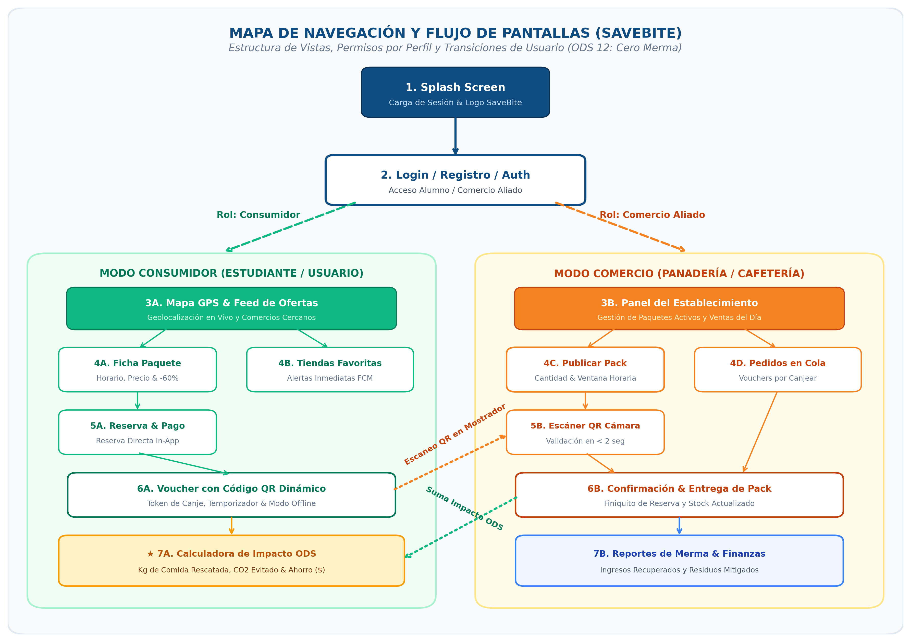
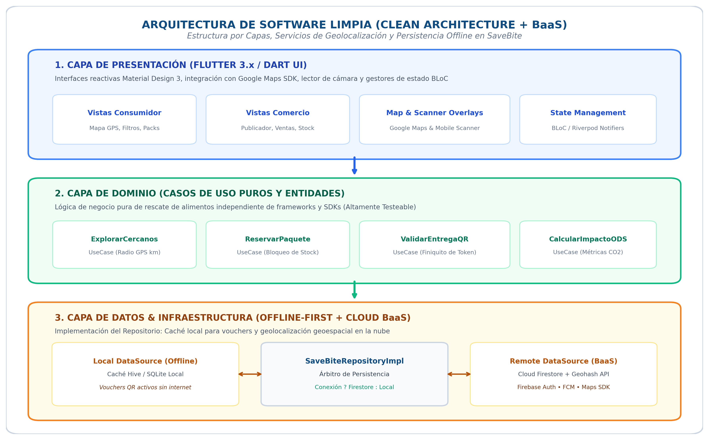

Excedentes de Alimentos Locales a Precio Reducido • Mitigación de Merma y Consumo Responsable (ODS 12)
El desarrollo de soluciones móviles exitosas exige equilibrar velocidad de comercialización, calidad arquitectónica y una respuesta contundente a problemáticas socioeconómicas y ambientales reales. Iniciar la codificación de un proyecto móvil sin una fase previa de análisis de requerimientos, alcance y planificación estratégica conduce invariablemente a la acumulación de deuda técnica y al sobrecosto de recursos.
Planificar permite anticipar las limitaciones y restricciones técnicas inherentes a la plataforma móvil antes de escribir la primera línea de código: consumo de batería derivado del uso continuo del sensor GPS, gestión de permisos críticos en el sistema operativo (acceso a cámara en tiempo real para lectura óptica y notificaciones push en segundo plano), volatilidad de la cobertura de datos móviles en la calle y diseño de esquemas de datos geoespaciales eficientes. La planificación previa evita retrabajos de semanas, desacuerdos entre integrantes y asegura que la arquitectura seleccionada sea capaz de escalar sin colapsar.
El ecosistema móvil se caracteriza por ciclos de innovación acelerados y una exigencia inquebrantable de usabilidad por parte de los usuarios. Las metodologías ágiles (Scrum, Kanban) proporcionan ventajas estratégicas decisivas:
SaveBite es una plataforma móvil colaborativa de economía circular que conecta a establecimientos gastronómicos locales (panaderías, pastelerías, cafeterías, fruterías y pizzerías) con la comunidad universitaria y urbana para rescatar comida del día en perfecto estado mediante "Paquetes Sorpresa" con descuentos del 50% al 70% antes del horario de cierre.
En las zonas comerciales y universitarias de Salamanca y sus alrededores, decenas de negocios de alimentos preparados generan diariamente excedentes que, a pesar de estar en perfecto estado para su consumo, son desechados al término de la jornada comercial debido a la falta de un canal dinámico de liquidación inmediata. Simultáneamente, miles de estudiantes universitarios y jóvenes foráneos enfrentan dificultades económicas para costear alimentos preparados de calidad.
SaveBite resuelve esta brecha creando un mercado hiperlocal eficiente: los comercios publican a media tarde sus lotes de excedentes en forma de "Paquetes Sorpresa" a precios reducidos, mientras que los usuarios exploran en un mapa interactivo con GPS, reservan in-app y pasan a recoger el paquete al mostrador antes del cierre validando su entrega mediante un código QR dinámico. El proyecto responde de manera directa a los Objetivos de Desarrollo Sostenible (ODS de la ONU): ODS 12 (Producción y Consumo Responsables) y ODS 2 (Hambre Cero).
Alumnos de ingeniería y jóvenes foráneos con presupuesto diario ajustado. Buscan comida fresca, variada y económica cerca de sus rutas habituales sin complicaciones.
Panaderías, cafeterías y fruterías locales que buscan recuperar costos de materia prima, eliminar costos de merma y atraer nuevos clientes a su mostrador.
Personas comprometidas con la sostenibilidad, interesadas en reducir su huella de carbono y evitar el desperdicio innecesario de recursos naturales.
El sistema integra el conjunto de características fijas esenciales apoyadas en el hardware móvil más la característica innovadora propuesta por el equipo:
Exploración visual interactiva en tiempo real con Google Maps SDK que muestra los comercios cercanos con paquetes disponibles mediante pines categorizados, cálculo automático de distancia y rutas de recolección a pie o en vehículo.
Ficha detallada por comercio que muestra el valor original tachado vs. precio con descuento (50% al 70%), horario estricto de recogida (ej. 19:30 a 20:30 hrs), cantidad restante en stock y botón de reserva inmediata con 1 toque.
Cierre instantáneo de la transacción en mostrador: la app del usuario genera un voucher digital con QR dinámico con token de un solo uso; el comerciante escanea el código con la cámara de su teléfono para confirmar la entrega en menos de 2 segundos.
Disparo de alertas inmediatas cuando las panaderías, cafeterías o fruterías favoritas del usuario publican nuevos paquetes sorpresa del día, además de recordatorios preventivos cuando restan 30 minutos de la ventana de recogida.
Persistencia local (Hive / SQLite) que guarda los tickets y vouchers reservados en el almacenamiento del dispositivo, permitiendo al usuario presentar su código QR al comerciante aun si se queda sin señal de datos en la vía pública.
Módulo gamificado en el perfil que calcula los kilogramos de comida rescatados del vertedero, el dinero acumulado ahorrado y los kg de emisiones de CO2 equivalente evitados en cada compra, otorgando insignias ecológicas y respaldando el ODS 12 de la ONU.
Para el ciclo de desarrollo de SaveBite, el equipo seleccionó el marco de trabajo Scrum, optimizado con un tablero visual continuo de tareas inspirado en Kanban (Scrumban) para asegurar flujo constante y control de cuellos de botella.
Selección de historias prioritarias del Product Backlog y definición del Sprint Goal.
Sincronización: ¿Qué hice ayer? ¿Qué haré hoy? ¿Qué bloqueos técnicos tengo?
Demostración en vivo del APK ejecutable a la docente y usuarios de prueba.
Análisis de aciertos, fallos y acuerdos de mejora continua para el siguiente ciclo.
main para versiones estables y utilizando ramas secundarias develop y feature/nombre-modulo con Pull Requests revisados antes de integrar cambios.| Sprint | Objetivo Principal (Sprint Goal) | Entregable Funcional (Incremento) |
|---|---|---|
| Sprint 1 Semanas 1-2 |
Configurar proyecto Flutter con Clean Architecture, Firebase Auth con roles (Usuario/Comercio) y mapas base con Google Maps SDK. | APK v0.1 con autenticación y visualización de mapa con geolocalización. |
| Sprint 2 Semanas 3-4 |
Módulo de publicación de paquetes sorpresa por comercios y catálogo con filtros de distancia en tiempo real con Firestore. | APK v0.2 capaz de explorar ofertas activas en el mapa y consultar fichas. |
| Sprint 3 Semanas 5-6 |
Lógica de reserva, generación de voucher QR, módulo de escaneo con cámara para comercios y persistencia offline con Hive. | APK v0.3 con ciclo completo de reserva y validación de canje con QR. |
| Sprint 4 Semanas 7-8 |
Notificaciones Push (FCM), calculadora de impacto ecológico (CO2 y dinero ahorrado), pruebas y release final. | Release Final APK v1.0, manual de usuario y documentación técnica. |
| Integrante | Rol Asignado | Responsabilidades Principales |
|---|---|---|
|
Alvaro Jesús Chávez Bazana Estudiante IDGS UTS |
Product Owner (PO) Gestor de Requisitos & ODS |
• Definir la visión y propuesta de valor de SaveBite (modelo ODS de rescate de alimentos). • Crear, redactar y priorizar las historias de usuario en el Product Backlog. • Definir criterios de aceptación (DoD - Definition of Done). • Validar entregas con la docente y recopilar retroalimentación de panaderías y comercios locales. |
|
Guillermo Yael Berlín Fomperosa Estudiante IDGS UTS |
Scrum Master Facilitador Ágil & QA |
• Velar por la correcta aplicación de los principios y ceremonias de Scrum. • Facilitar sesiones de Sprint Planning, Daily Standup, Review y Retrospective. • Remover impedimentos técnicos u organizacionales que frenen al equipo. • Administrar el tablero en Trello/GitHub y coordinar pruebas de calidad en campo (QA). |
|
Juan Pablo Vega Uribe Estudiante IDGS UTS |
Lead Mobile Developer Frontend & UI/UX |
• Desarrollar interfaces fluidas en Flutter / Dart con Material Design 3. • Implementar el mapa interactivo con Google Maps SDK y navegación reactiva BLoC. • Integrar el controlador de cámara para lectura de códigos QR con baja latencia. • Diseñar el flujo de reserva y canje con un toque para garantizar máxima usabilidad. |
|
Diego Sebastián Vilegas Enriquez Estudiante IDGS UTS |
Backend & Data Architect Cloud BaaS & Offline Cache |
• Diseñar el modelo de datos documental y consultas geoespaciales con Geohashing en Firestore. • Configurar autenticación, reglas de seguridad y control por roles (RBAC). • Desarrollar persistencia local Offline-First con Hive / SQLite para vouchers. • Integrar Notificaciones Push (FCM) y Cloud Functions para alertas de vencimiento. |


Con la culminación de esta primera fase para SaveBite, el equipo de desarrollo de IDGS establece una propuesta de alto valor técnico y social. La articulación del marco ágil Scrum, la distribución de roles especializados entre sus cuatro integrantes (Alvaro, Guillermo, Juan Pablo y Diego) y una Clean Architecture con capacidades Offline-First y Geolocalización aseguran un desarrollo ordenado, sustentable y alineado a las expectativas de la asignatura Desarrollo Móvil Integral.